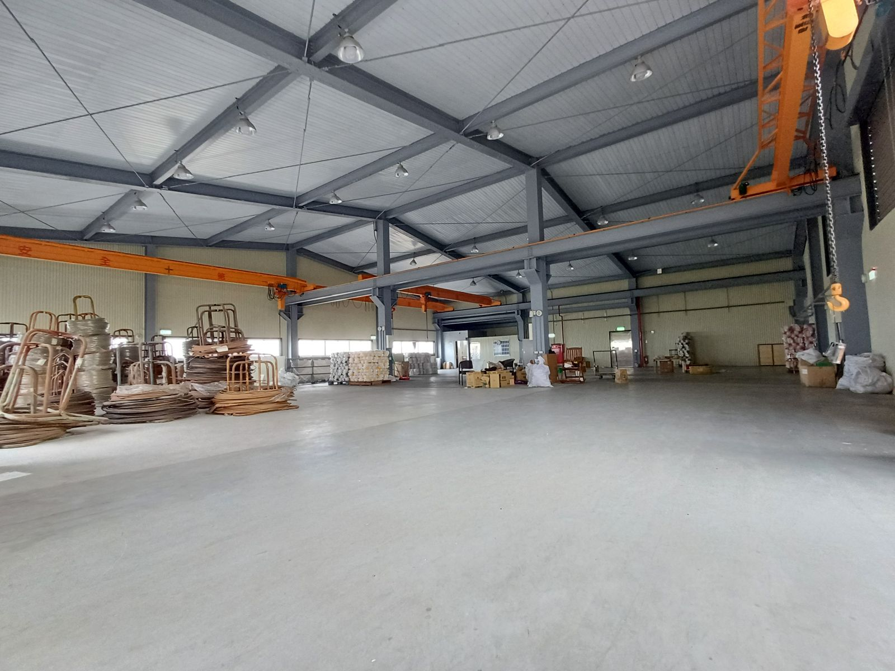
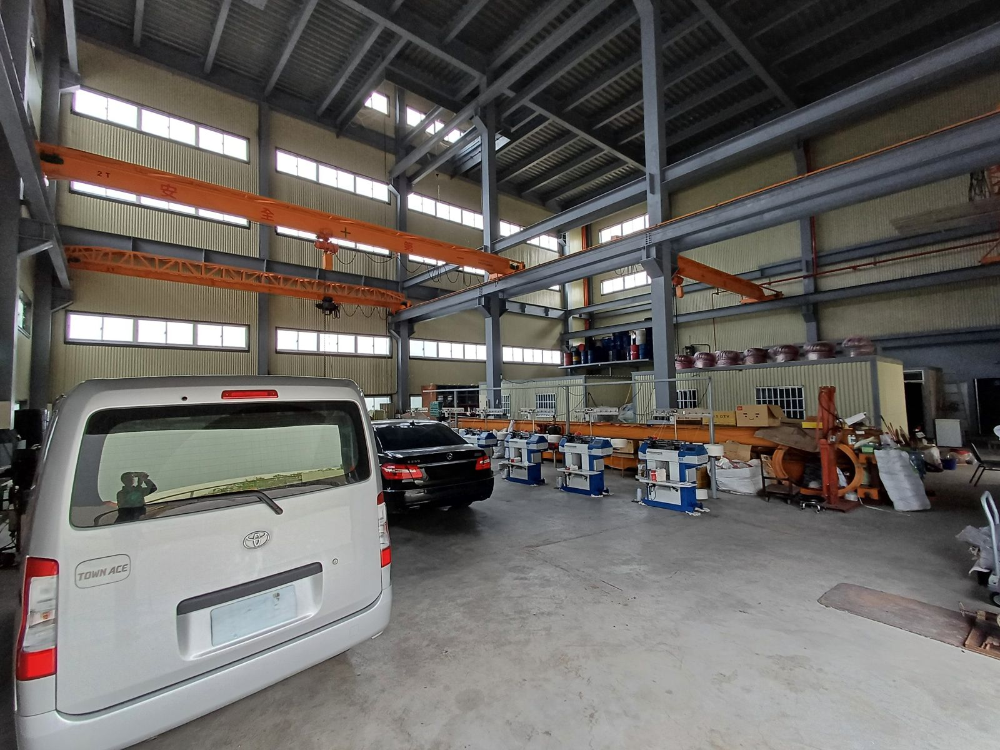
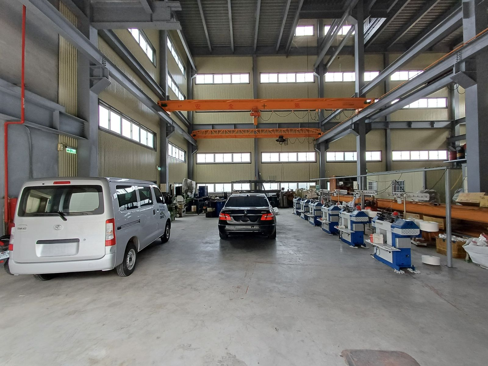
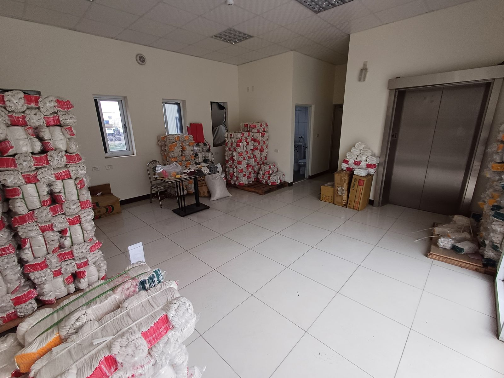

| 類別 | 大型廠房 |
|---|---|
| 編號 | IND-020 |
| 區域 | 路竹區環球路 |
| 價格 | 16,500萬（約42.31萬/地坪） |
| 使用分區 | 丁種建築用地、甲種建築用地 |
| 土地坪數 | 389.97 |
| 建物坪數 | 518.76 |
| 備註 | 丁種建築用地約372.02坪、甲種建築用地約17.95坪、鋼骨結構堅實，附8台天車方便作業、距離國一交流道約1.5公里(約3分鐘車程)，方便南來北往交通運輸 |
洽詢：楊紘珉（富住通商用不動產 新興店）0905-858-141｜LINE 諮詢